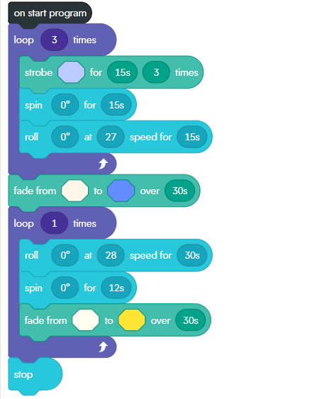

In my freshman and sophmore years of highschool, I took Cybersecurity as my CTAE pathway. During this pathway, I was first introduced to html and several other coding languages. This image shows when I completed a basic SQL course.
In my Cybersecurity pathways we were also given the opportunity to work with spheros, which are sphere shaped programmable robots, This image features how I coded my sphero.
For more information on spheros, check out their website.
My SIP Projects
In summer of 2022 I was able to particpate in the Girls who Code Summer Immersion Program. Below are some of the projects I have created, including this one!